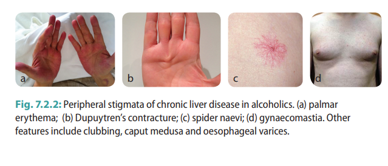

Evaluation of a patient with Alcohol use
[Expanded with example questions to ask and MSE findings to expect]
Scenario: A 40-year old male has come to your with complaint of gastritis. You suspect that he has a drinking problem. Take a history for alcohol use.
Checklist:
Introduction
- Introduces self
- Explains purpose of history and gains consent
Focused history of presenting complaint
- Open question “What brings you here today? What sorts of problems have you been having”
- Complaint: Onset - sudden/gradual?, Preceding event?
Alcohol history
Gentle screening (overcome the shame, fear or reluctance to disclose that patients may feel)
- "To better understand your condition I am going to ask you questions about your use of alcohol, tobacco and other drugs. Is that okay with you?"
- OR link it with the chief complaint and ask "Some people who suffer from _____ may have been drinking. Does this describe your situation?"
Proceed further
- First drink in life
- When did you have your first drink?
- Current pattern
- What? (Country liquor or IMFL)
- Where? (Home or outside)
- When? (Throughout the day or evening)
- How much? (Units, glasses or ml)
- With whom? (Alone or with friends)
- Any more on the weekend?
- How long have you been drinking this much?
- Ever tried to stop?
- Assess use disorder (this device include only ten out of the eleven symptoms in DSM-5)
- Loss of control
- Craving - Do to crave for drinks in between sessions?
- Control - Do to find it difficult to control the amount you drink after you have started?
- Cutdown - Have you ever felt you should Cut back on your drinking?
- Physiological dependence
- Tolerance - Have you been needing to drink more to get the same effect?
- Withdrawal - Do you need to have a drink first thing in the morning? Do you get tremors?
- Risky use
- Persistence - Does it worry you that alcohol may be causing you some harm? (Key things is that pt is not able to stop despite the difficulty it is causing)
- Hazardous - Have you used alcohol in situations where it can be harmful to yourself or others e.g. drink and drive?
- Effect on functioning / Social impairment
- 'What has been the impact of all this on your day to day functioning? (work, debt, legal)
- Who’s at home? Is relationship with wife affected? Domestic violence? Anger/aggression toward children?
- On these questions we are looking for history s/o
- failure in fulfilling role obligations at work, school or home due to alcohol use
- giving up of important social or occupational activities due to alcohol use
- persistent or recurrent social or interpersonal problems due to alcohol use
- Risks - risk assessment can be done at this juncture, but to maintain format it has been shown below
- Collateral history from a reliable informant.
Focused Psych ROS
- Depression – Have you had any episode lasting at least 2 weeks where you felt depressed or loss of interest?
- Manic symptoms - 'In the past week, have you felt very cheerful or unusually irritable or over-talkative?
- Psychosis – Hallucinations & Delusions? - 'When people are under stress, they complain of hearing voices or believing that other people are doing something to harm him. Do you have such experiences?’
- Screen for other anxiety disorders
Risk Assessment
- Shows empathy before asking about suicidal ideation
- Use empathy statement like 'You have been going through a lot.'
- Asked patient about death wishes?
- 'Have you ever felt like life has become a burden?
- 'Do you ever feel you go to sleep and never wake up?'
- Asked patient about suicidal ideation?
- 'Have you ever had thoughts of harming yourself?' [explore further if yes]
- Ask for Homicidal ideation – ‘Do you have a lot of anger or frustration? Have you thought of hurting someone?’
Past psychiatric history – esp depression, mania, suicide attempt
- 'Have you ever had any psychiatric illness / consultation in the past?' [Explore in detail if yes]
Family history – esp. Depression, suicide, psychosis
- 'Has any of your blood relative suffered from any psychiatric illness or attempted suicide?'
Past medical history – including allergies, if required developmental history
- Have your doctor diagnosed you with any medical condition?
- Do you have any allergies?
- Problem with memory?
- Seizures?
- Coordination?
- Painful/numb limbs?
- Blood in vomiting? Black coloured stool?
- Liver problems? Jaundice?
- Erection problems?
- High blood pressure?
- Heart problems?
- Stroke?
Drug and Substance use
- Prescription drugs
- 'Are you on any prescription medications?'
- OTC and CAM drugs
- 'Are you using any OTC or Alternative medications?'
- 'How much tea and coffee do you drink?'
- Substance of abuse – tobacco, opioids, cannabis etc.
- 'Do you use any other substance like tobacco or recreational drugs?'
Psychosocial History
- Education
- 'How far did you go in school / college?'
- 'How did you do in school / college?'
- 'Did you have any trouble with peers / teachers?'
- Occupation
- 'What did you do after finishing school / college?'
- 'What jobs have you held and for how long?'
- 'Can you tell me about your current job?'
- Family and friends, social support [who is providing], financial support, housing situation
- 'Can you tell me about your family and friends?'
- 'Can you tell me about who is providing emotional support to you at this moment?'
- 'Do you have trouble making ends meet?'
- Legal history?
- 'Have you had any convictions or legal troubles?'
Insight & Motivation
- 'What is good about alcohol?'
- 'Is it a problem?'
- 'How would you like to see yourself in a few years time?'
- Stages - Pre-contemplation / Contemplation / Action / Maintenance / Relapse
- 'Do you think you need help?'
- ‘Would you agree if I say your current condition may be explained by an illness?’
- 'Could it be a psychiatric illness?'
- 'Would you be willing to accept treatment?'
Summary
- Thank patient
- Questions? Concerns?
- Suggest further tests
MSE findings in a patient with alcohol use
Appearance and Behaviour: Dishevelled, poorly groomed, malodorous; may appear older than stated age
in withdrawal - restless with mild shaking of the hands
in intoxication - gait is ataxic, and breath may smell of alcohol
Agitation can be present in both withdrawal or intoxication
Speech: May have slurring, increased volume. Normal rate.
Mood: “Depressed", "Irritable" or "Expansive"
Affect: Mood congruent
Thought process: May be circumstantial, and give irrelevant answers to questions.
Thought content: Patient may be dismissive of the concerns about alcohol use. May have paranoid ideations or harbour delusions of infidelity.
Suicidality: Substance use is one of the risk factors for suicide, hence suicidality must always be assessed.
Homicidality: Possible with varying degrees.
Perception: Depending on the level of intoxication or withdrawal patient may have hallucinations.
Cognition: Can range from alert and oriented to poor alertness in an intoxicated patient. A delirious patient might not be oriented to time, place and person. poor concentraion, registration and recall may be present. A patent with alcoholic dementia may score <24 on MMSE.
Insight: Vary from good to poor depending on level of intoxication or withdrawal. May use denial as defence mechanism. Motivational stages are listed above.
Judgment: May be impaired.
Peripheral stigmata of chronic liver disease in patient with alcohol use

Self directed learning material
1. Psychiatric interview for substance use disorder
2. Psychiatric interview for alcohol use disorder
Created with the Personal Edition of HelpNDoc: Full-featured Kindle eBooks generator